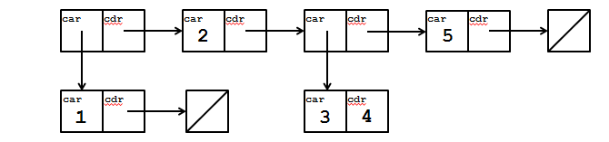

Lab 11: Scheme
Due at 11:59pm on 08/01/2015.
Starter Files
Download lab11.zip. Inside the archive, you will find starter files for the questions in this lab, along with a copy of the OK autograder.
Submission
By the end of this lab, you should have submitted the lab with
python3 ok --submit. You may submit more than once before the
deadline; only the final submission will be graded.
- To receive credit for this lab, you must complete Questions 2, 3, 4, 5, 6, 7, 8, and 9 in lab11.scm and submit through OK.
- Questions 10 and 11 are extra practice. They can be found in the lab11_extra.scm file. It is recommended that you complete these problem on your own time.
Scheme
Scheme is a famous functional programming language from the 1970s. It is a dialect of Lisp (which stands for LISt Processing). The first observation most people make is the unique syntax, which uses Polish-prefix notation and (often many) nested parentheses. (See http://xkcd.com/297/). Scheme features first-class functions and optimized tail-recursion, which were relatively new features at the time.
Our course uses a custom version of Scheme (which you will build for project 4). You can download it here (it is already included with the starter ZIP archive). To start the interpreter, navigate to the directory where it is downloaded and use the following command:
python3 schemeTo close the Scheme interpreter, type
(exit).You can load a file into Scheme using the following command (replace
name_of_filewith the name of your file):python3 scheme -load name_of_file.scmThis is like
python3 -i name_of_file.py.
Basics
Primitive Expressions
Let's take a look at the primitives in Scheme. Open up the Scheme
interpreter in your terminal with python3 scheme to see what Scheme
would print.
scm> 1 ; Anything following a ';' is a comment
______1
scm> 1.0
______1.0
scm> -27
______-27
scm> True
______True
scm> #t
______True
scm> False
______True
scm> #f
______False
scm> "A string"
______"A string"
scm> 'symbol
______symbol
scm> nil
______()Question 1: Call Expressions
What kind of programming language would Scheme be if it
didn't have any functions? Scheme uses Polish prefix notation, where
the operator comes before the operands. For example, to evaluate 3 +
4, we would type this into the Scheme interpreter:
scm> (+ 3 4)Notice that to call a function we need to enclose it in parentheses,
with its arguments following. Be careful about this, as while in
Python an extra set of parentheses won't hurt, in Scheme, it will
interpret the parentheses as a function call. Evaluating (3) results
in an error because Scheme tries to call a function called 3 that
takes no arguments.
Let's familiarize ourselves with some of the built-in functions in Scheme. Use OK to unlock the following "What would Scheme print?" questions:
python3 ok -q wwsp -uscm> (+ 3 5)
______8
scm> (- 10 4)
______6
scm> (* 7 6)
______42
scm> (/ 28 2)
______14
scm> (+ 1 2 3 4)
______10
scm> (quotient 29 5)
______5
scm> (remainder 29 5)
______4scm> (= 1 3)
______False
scm> (> 1 3)
______False
scm> (< 1 3)
______True
scm> (or #t #f)
______True
scm> (and #t #t)
______True
scm> (and #t #f (/ 1 0)) ; Short-Circuiting
______False
scm> (not #t)
______Falsescm> (define x 3) ; Defining Variables
______x
scm> x
______3
scm> (define y (+ x 4))
______y
scm> y
______7Defining Functions
To write a program, we need to write functions, so let's define one. The syntax for defining a function in Scheme is as follows:
(define (<name> <args>)
<body>)The name of the function and its argument(s) are separated by spaces. The function returns whatever the last line in the body evaluates to, no return statement necessary. For example, this is how we would define the double function:
(define (double x)
(+ x x))Here's how we would define a function with multiple arguments:
(define (add-then-mul x y z)
(* (+ x y) z)Question 2: Cube
Let's try it out! Define a function which cubes its input.
(define (cube x)
'YOUR-CODE-HERE
(* x x x))Use OK to unlock and test your code:
python3 ok -q cube -u
python3 ok -q cubeControl Structures
Let's introduce control statements to allow our functions to do more complex operations! The if-statement has the following format:
(if <condition>
<true_result>
<false_result>)For example, the following code written in Scheme and Python are equivalent:
| Scheme | Python |
|---|---|
|
|
In Scheme, you cannot write elif cases. If want to have multiple cases with the if-statement, you would need multiple branched if-statements:
| Scheme | Python |
|---|---|
|
|
Question 3: Over or Under
Define a function over-or-under which takes in an x and a y and
returns the the following:
- return -1 if
xis less thany - return 0 if
xis equal toy - return 1 if
xis greater thany
(define (over-or-under x y)
'YOUR-CODE-HERE
(if (= x y)
0
(if (> x y)
1
-1)))Use OK to unlock and test your code:
python3 ok -q over-or-under -u
python3 ok -q over-or-underUsing nested if-statement doesn't seem like a very practical way to take care of multiple cases. Instead, we can use the cond special form, a general conditional expression similar to a multi-clause conditional statement in Python.
(cond
(<p1> <e1>)
(<p2> <e2>)
...
(<pn> <en>)
(else <else-expression>))It consists of the symbol cond followed by pairs of expressions enclosed in parentheses (<p> <e>) called clauses. The first expression in each pair is a predicate: an expression whose value is interpreted as either True or False. The second expression is the return expression corresponding to its predicate.
The following code is equivalent:
| Scheme | Python |
|---|---|
|
|
Question 4: Greatest common divisor
Let's revisit a familiar problem: finding the greatest common divisor of two numbers.
Write the procedure gcd, which computes the gcd of numbers a and b.
Recall that the greatest common divisor of two positive integers a and b
is the largest integer which evenly divides both numbers (with no remainder).
Euclid's
algorithm states
that the greatest common divisor is
- the smaller value if it evenly divides the larger value, OR
- the greatest common divisor of the smaller value and the remainder of the larger value divided by the smaller value
In other words, if a is greater than b and a is not divisible by
b, then
gcd(a, b) == gcd(b, a % b)You may find the provided functions min and max helpful. You can
also use the built-in modulo function.
(define (max a b) (if (> a b) a b))
(define (min a b) (if (> a b) b a))
(define (gcd a b)
'YOUR-CODE-HERE
(cond ((zero? a) b)
((zero? b) a)
(else (gcd (min a b) (modulo (max a b) (min a b))))))Use OK to unlock and test your code:
python3 ok -q gcd -u
python3 ok -q gcdLists
Scheme lists are very similar to the Linked Lists that we haved worked with in Python. Lists are made up of pairs, which
can point to two objects. To create a pair, we use the cons function,
which takes two arguments:
scm> (define a (cons 3 5))
a
scm> a
(3 . 5)Note the dot between the 3 and 5. The dot indicates that this is a
pair, rather than a sequence (as you'll see in a bit).
To retrieve a value from a pair, we use the car and cdr functions
to retrieve the first and second elements in the pair.
scm> (car a)
3
scm> (cdr a)
5Look familiar yet? Just like Linked Lists, lists in Scheme are
formed by having the first element of a pair be the first element of
the list, and the second element of the pair point to another pair
containing the rest of list. The second element can be nil to signify the end of the list. For example, the sequence (1, 2, 3) can be represented in Scheme with the following line:
scm> (cons 1 (cons 2 (cons 3 nil)))which creates the following object in Scheme:
We can then of course retrieve values from our list with the car and
cdr function.
scm> a
(1 2 3)
scm> (car a)
1
scm> (cdr a)
(2 3)
scm> (car (cdr (cdr a)))
3This is not the only way to create a list though. You can also use the
list function, as well as the quote form, to form a list:
scm> (list 1 2 3)
(1 2 3)
scm> '(1 2 3)
(1 2 3)
scm> '(1 . (2 . (3)))
(1 2 3)These are all the same lists! There are a few other built-in functions in Scheme that are used for lists. Try them out!
scm> (define a '(1 2 3 4))
______a
scm> (define b '(4 5 6))
______b
scm> (define empty '())
______empty
scm> (append '(1 2 3) '(4 5 6))
______(1 2 3 4 5 6)
scm> (length '(1 2 3 4 5))
______5
scm> (null? '(1 2 3)) ; Checks whether list is empty.
______False
scm> (null? '())
______True
scm> (null? nil)
______TrueQuestion 5: Make a List
Create the list with the following box-and-pointer diagram:

(define lst
'YOUR-CODE-HERE
(cons (cons 1 '())
(cons 2
(cons (cons 3 4)
(cons 5 '())))))Use OK to unlock and test your code:
python3 ok -q make-list -u
python3 ok -q make-listQuestion 6: Remove
Implement a function remove that takes in a list and
returns a new list with all instances of item removed from lst.
(define (remove item lst)
'YOUR-CODE-HERE
(cond ((null? lst) '())
((equal? item (car lst)) (remove item (cdr lst)))
(else (cons (car lst) (remove item (cdr lst))))))
;;; Tests
(remove 3 nil)
; expect ()
(remove 3 '(1 3 5))
; expect (1 5)
(remove 5 '(5 3 5 5 1 4 5 4))
; expect (3 1 4 4)Use OK to unlock and test your code:
python3 ok -q remove -u
python3 ok -q removeQuestion 7: Filter
Write a function filter, which takes a predicate function f and a list lst, and returns a new list containing only elements of the list that satisfy the predicate.
(define (filter f lst)
'YOUR-CODE-HERE
(cond ((null? lst) '())
((f (car lst)) (cons (car lst) (filter f (cdr lst))))
(else (filter f (cdr lst)))))Use OK to unlock and test your code:
python3 ok -q filter -u
python3 ok -q filterLambdas
Ah yes, you thought you were safe, but we can also write lambda
functions in Scheme!
As noted above, the syntax for defining a procedure in Scheme is:
(define (<name> <args>)
<body>
)Defining a lambda has a slightly different syntax, as follows:
(lambda (<args>)
<body>
)Notice how the only difference is the lack of function name. You can create and call a lambda procedure in Scheme as follows:
; defining a lambda
(lambda (x) (+ x 3))
; calling a lambda
((lambda (x) (+ x 3)) 7)Question 8: make-adder
Write the procedure make-adder which takes in an initial number,
num, and then returns a procedure. This returned procedure takes in a
number x and returns the result of x + num.
(define (make-adder num)
'YOUR-CODE-HERE
(lambda (x) (+ x num)))Use OK to unlock and test your code:
python3 ok -q make-adder -u
python3 ok -q make-adderQuestion 9: Composed
Write the procedure composed, which takes in procedures f and g
and outputs a new procedure. This new procedure takes in a number x
and outputs the result of calling f on g of x.
(define (composed f g)
'YOUR-CODE-HERE
(lambda (x) (f (g x))))Use OK to unlock and test your code:
python3 ok -q composed -u
python3 ok -q composedExtra Questions
The following questions are for extra practice — they can be found in the the lab11_extra.scm file. It is recommended that you complete these problems on your own time.
Question 10: num-leaves
Here is a Binary Tree ADT in Scheme:
(define (make-btree entry left right)
(cons entry (cons left right)))
(define (entry tree)
(car tree))
(define (left tree)
(car (cdr tree)))
(define (right tree)
(cdr (cdr tree)))
(define test-tree
(make-btree 2
(make-btree 1
nil
nil)
(make-btree 4
(make-btree 3
nil
nil)
nil)))
; test-tree:
; 2
; / \
; 1 4
; /
; 3Write a procedure num-leaves that counts the number of leaves in a
tree.
(define (num-leaves tree)
'YOUR-CODE-HERE
(cond ((null? tree) 0)
((and (null? (left tree))
(null? (right tree)))
1)
(else (+ (num-leaves (left tree))
(num-leaves (right tree))))))Use OK to unlock and test your code:
python3 ok -q num-leaves -u
python3 ok -q num-leavesQuestion 11: Accumulate
Fill in the definition for the procedure accumulate, which takes the
following parameters:
combiner: a function of two argumentsstart: a number with which to start combiningn: the number of terms to combineterm: a function of one argument that computes the nth term of a sequence
accumulate should return the result of combining the first n terms
of the sequence.
(define (accumulate combiner start n term)
(if (= n 0)
start
'YOUR-CODE-HERE
(combiner (accumulate combiner
start
(- n 1)
term)
(term n)) )
)Use OK to unlock and test your code:
python3 ok -q accumulate -u
python3 ok -q accumulate